中村 太一（たいち）
保険代理店でFPとして、家計や保険のご相談を受けています。
僕自身も小さな子ども2人を育てる親です。教育資金や保険、NISAなど、自分が実際に悩んで考えてきたことを、同じ目線でお伝えします。
Instagramでは、お金・保険・制度・マイルの情報を発信中です。
経歴・仕事への想い・お客様の口コミはこちら →子育て世帯のお金・保険・資産形成について、僕の考えと経験をまとめました。
横にスクロールできます →
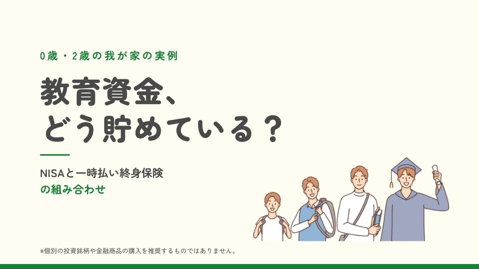
No.01 教育資金、どう貯めている？ 0歳・2歳の我が家の実例。NISAと一時払い終身保険の組み合わせ PDFを読む →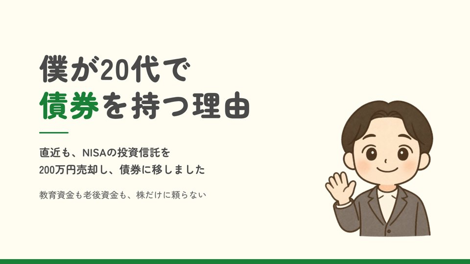
No.02 僕が20代で債券を持つ理由 教育資金も老後資金も、株だけに頼らない PDFを読む →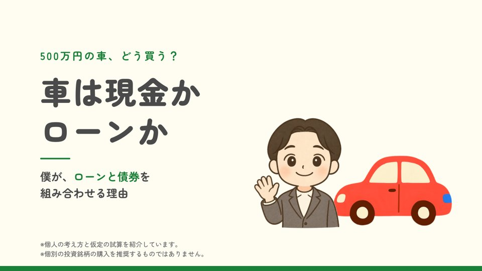
No.03 車は現金かローンか 500万円の車、どう買う？ローンと債券を組み合わせる理由 PDFを読む →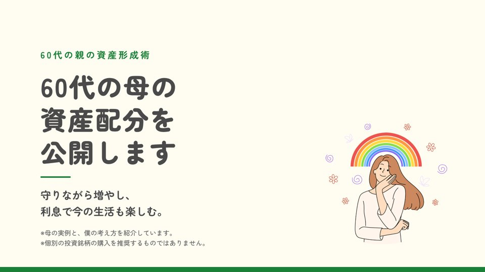
No.04 60代の母の資産配分を公開します 守りながら増やし、利息で今の生活も楽しむ PDFを読む →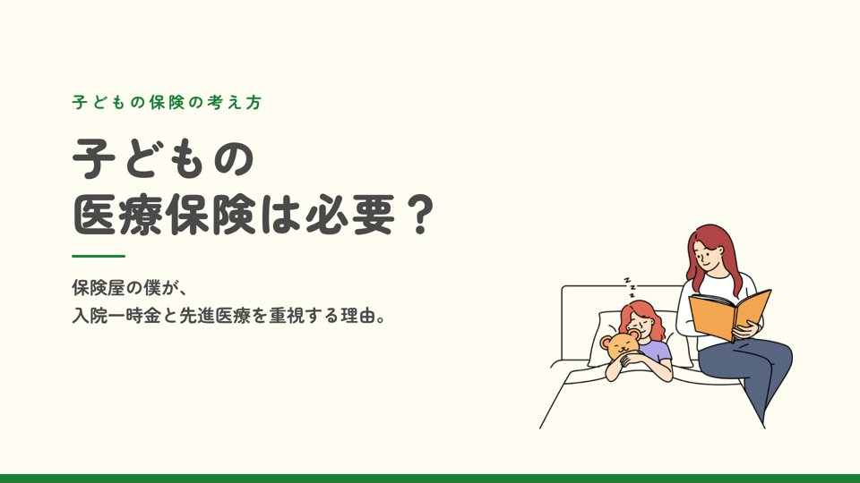
No.05 子どもの医療保険は必要？ 保険屋の僕が、入院一時金と先進医療を重視する理由 PDFを読む →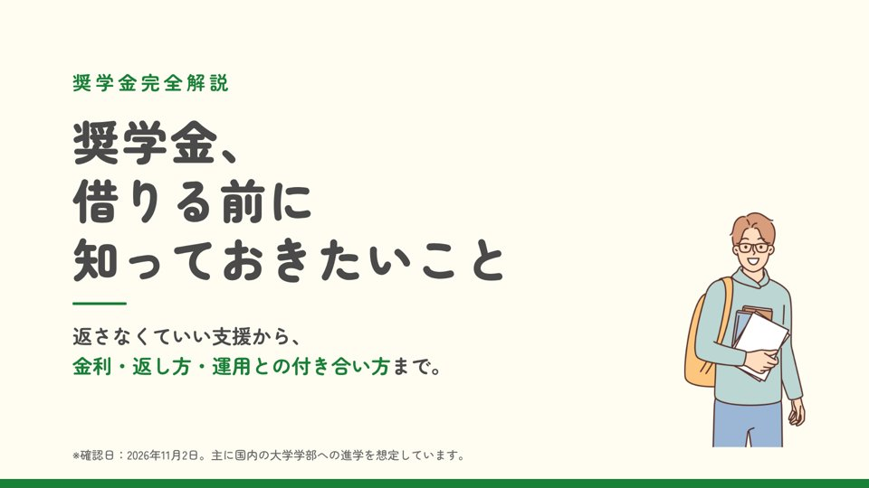
No.06 奨学金、借りる前に知っておきたいこと 返さなくていい支援から、金利・返し方・運用との付き合い方まで PDFを読む →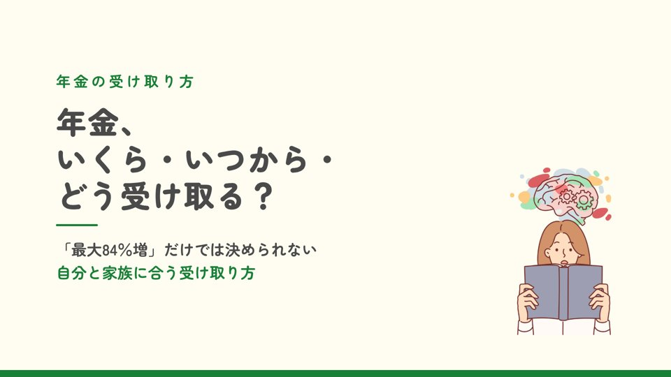
No.07 年金、いくら・いつから・どう受け取る？ 「最大84%増」だけでは決められない、自分と家族に合う受け取り方 PDFを読む →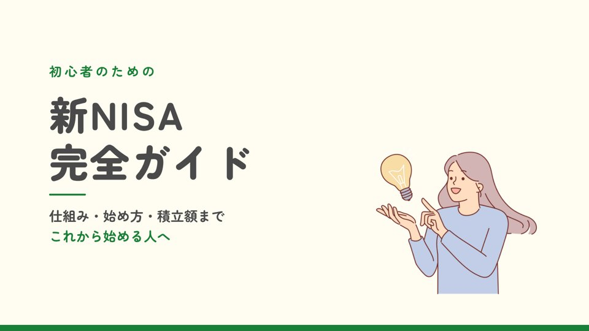
No.08 新NISA完全ガイド 仕組み・始め方・積立額まで、これから始める人へ PDFを読む →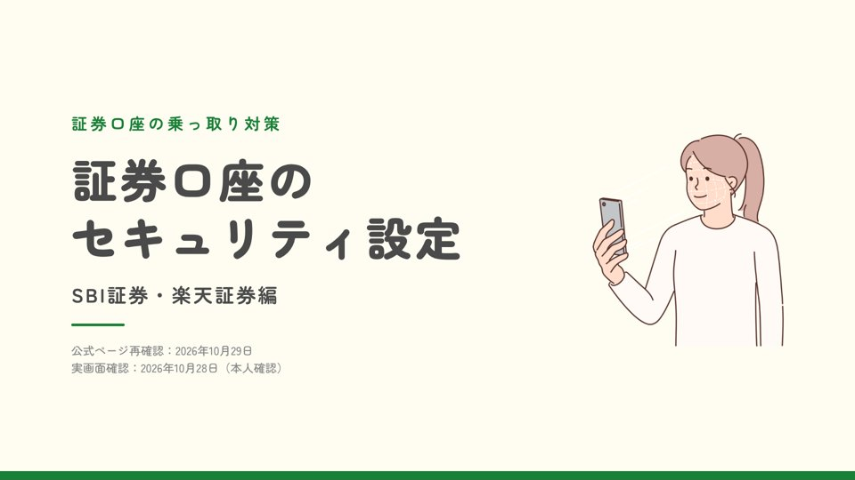
No.09 証券口座のセキュリティ設定 乗っ取り対策 SBI証券・楽天証券編 PDFを読む →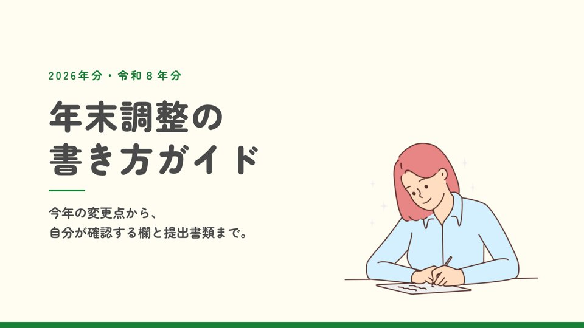
No.10 年末調整の書き方ガイド 2026年分。今年の変更点から、確認する欄と提出書類まで PDFを読む →特典を読んで「自分の場合はどうなる？」と思ったら、
個別相談で一緒に整理しましょう。
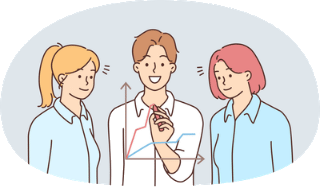
保険の見直し・新規加入
今の保険の内容を整理して、ご家族に合った保障をご提案します。
家計の見直し
収入・支出・貯蓄を確認して、見直せる固定費を一緒に探します。
資産形成のバランス
NISAだけでなく、債券なども含めた資産の分け方を考えます。
教育資金の準備
いつ・いくら必要かを整理して、無理のない貯め方を考えます。
老後資金・年金
年金の受け取り方や、今からできる老後の準備をお話しします。
車・家の購入
現金かローンか、どう準備するかを家計に合わせて考えます。
子育てのお金・制度
出産・育休などで使える制度や、申請が必要なお金を確認します。
マイルの貯め方
「マイルってそもそも何？」から、家族旅行に使う方法まで。
親の資産のこと
60代のご両親の資産の守り方・増やし方も一緒に考えます。
相談内容と希望日時を送る
「相談希望」と、気になっていること・ご都合のよい日時を送ってください。
※保険や金融商品をご提案する場合がありますが、ご希望でなければ契約していただく必要はありません。
あるとスムーズなもの
※なくてもご相談いただけます。
無理な勧誘はしません
ご本人とご家族の状況や想いが最優先です。不安をあおって保険をすすめたり、ご希望がないのに保険をご提案したりすることはありません。
わかりやすくお話しします
専門用語はできるだけ使わず、初めての方にも伝わる言葉でお話しします。
個人情報は大切に扱います
当たり前のことですが、お聞きした内容はご相談のためだけに使います。ご本人の同意なく、ほかの目的に使ったり、外部に漏らしたりすることはありませんので、安心してお話しください。
家計・保険・資産形成・教育資金・老後資金・車や家の購入・マイルなど、お金のことなら何でも大丈夫です。「何を聞けばいいかわからない」という段階でも歓迎です。
相談料はかかりません。何度ご相談いただいても無料です。
いいえ、必ず保険に入らなければいけないことはありません。
僕の方から「必ず何か提案させてください」「必ず保険を契約してください」というものでもございませんので、安心してご相談ください。
オンライン面談の場合は、1回あたり約60分です。
対面の場合は、お客様に合わせて60分以上でも対応できます。